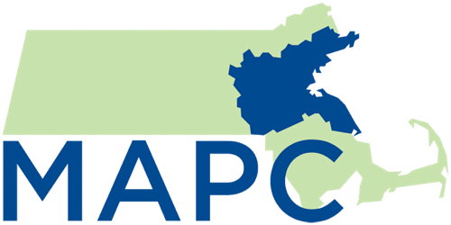

The Metropolitan Area Planning Council (MAPC) is a regional planning agency serving the people who live and work in the 101 cities and towns of Metropolitan Boston. Our mission is promoting smart growth principles and regional collaboration.

Why is MAPC working on a cycling and walking map?
Adds regional to existing local views
Creates internal and external work resource
Public information
Are there any related mapping initiatives?
State: road inventory
MassDOT
Bicycle Network Plan
MassDOT
CTPS/MPO
Cities & Towns
Consultants
What steps were involved?
Define Goal
Data Collection
Data Cleaning
Map Publishing
0. Define Goal
Create a facility map, not a suitablity map or an inventory map
Focus on regional network, not data completeness or location accuracy.
1. Data Collection
Expect some data diversity in:
Sources
Interests
Availability
Schemas
Quality
Formats
2. Data Cleaning
Specify and migrate data into a data schema that effieciently supports your goals.
Stay compatible to related data collection initiatives and enable data sharing.
3. Map Publishing
Internal work resource (continous updates):
Desktop GIS map
Public paper map (annual updates):
Desktop GIS map → Graphic design → Print
Online map (continous updates):
Data → Map rendering → Web interface
Data storage: which spatial data storage supports my workflow?
Map rendering: overlay on existing basemap vs. custom map rendering?
Map hosting: map server for real-time rendering vs. static map images?
Available tools: proprietary vs. Open Source?
Lessons learned...
Re Open Source vs. proprietary software debate: assess staff capacity. Either leverage knowledge of existing proprietary tools and invest in software-licenses or invest in staff capacity building on Open Source tools.
Prevent data lock-in: some proprietary tools prefer proprietary data formats, don't go there.
Custom basemap design pays off in terms of long-term brand recognition.